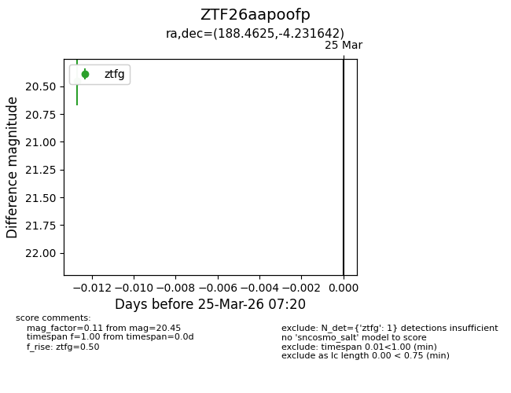
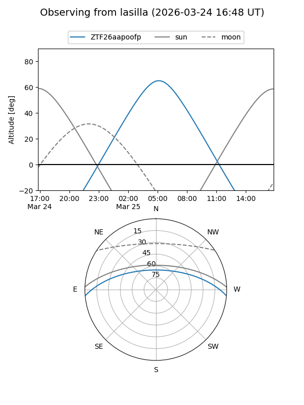
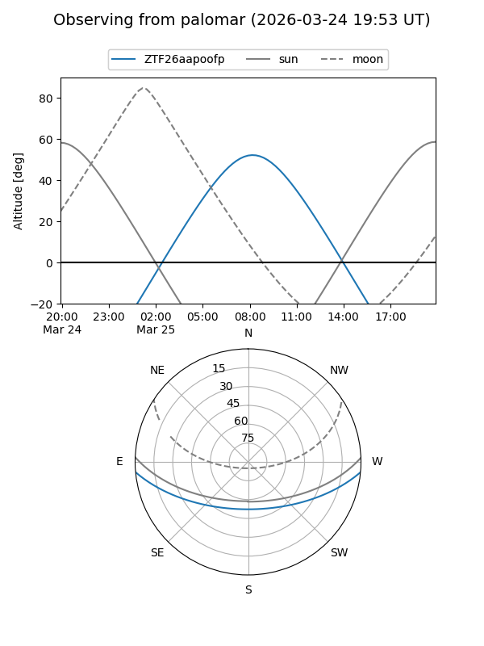

ZTF26aapoofp
Target ZTF26aapoofp at 2026-03-25 07:22
Aliases and brokers:
FINK: link
Lasair: link
ALeRCE: link
alt names
ZTF26aapoofp (ztf,fink_ztf)
Coordinates:
equatorial (ra, dec) = 188.4625,-4.23164
equatorial (HMS+DMS) = 12:33:51.00,-04:13:53.91
galactic (l, b) = (294.5527,+58.35368)
Flags:
Photometry:
last ztfg=20.45
1 ztfg detections
Lightcurve

Visibility


Additional plots